TIMBR Field › Getting started
For whoever looks after your Microsoft 365
Set TIMBR up for your company
Ten minutes, once, from inside the Hub: it makes the site, gives TIMBR access to it, starts the trial and creates the lists. After that each person installs the app and signs in with their own Microsoft 365 account. The same steps can be done by hand, and that route is written out further down for IT departments that prefer it.
In one line
Delegated permissions only (User.Read, Sites.Selected), no secrets or certificates, and access to one SharePoint site that you create and grant. Nothing else in the tenant. TIMBR cannot do anything when nobody is signed in, and every action appears in your sign-in logs as a named person.
TIMBR (63686792-1aa5-4dc4-9d27-2b2a215a7376) is the one registration the Hub, the phone app and the QGIS plugin sign in as, and the one that holds those permissions. TIMBR Setup (76e252f9-d6dc-4de7-8dd7-5160d0208f57) is a second, separate registration used only on the Hub's set-up page: it can see all sites, which is what creating one and handing TIMBR the key needs, and which TIMBR itself must never be able to do. It acts only as the administrator who is signed in to it, only while they are, and it can be removed from your Entra the moment set-up is done. Both are published by SG Arboricultural Consulting.
The short way: from the Hub
1. Install TIMBR Hub on your own computer, from the Download page, and open it.
2. Press Set up TIMBR for your company, on the Home page or under System › Set up. Seven lines, each with one button; the button at the top always does the next one:
- The administrator signs in. A Microsoft 365 Global Administrator. Microsoft asks twice for TIMBR Setup: once for its Microsoft Graph permissions (Have full control of all site collections, Sign in and read user profile), once for SharePoint (Have full control of all site collections). Accept both; it is this sign-in, and nothing stored, that the next three steps run as.
- The site. Leave the name as TIMBR and press Create or use it: a private team site appears at
/sites/TIMBRwith you as its owner. If your administrator has already made a site, paste its address instead and it is used as it is. - TIMBR is given the site. One button. This is the step that otherwise needs PowerShell. TIMBR can now reach this site and no other.
- TIMBR signs in. The same account again, this time to TIMBR itself. Microsoft shows TIMBR's own prompt: the three items in step 3 below, nothing tenant-wide. Tick Consent on behalf of your organisation.
- The licence. Type your company's name and start the free trial. It begins at once and covers everyone.
- TIMBR's lists are created on the site. A minute or two.
- The people. Paste the sign-in addresses of everyone who will use TIMBR, one per line. They become members of the site. More can be added later from the site's own members page.
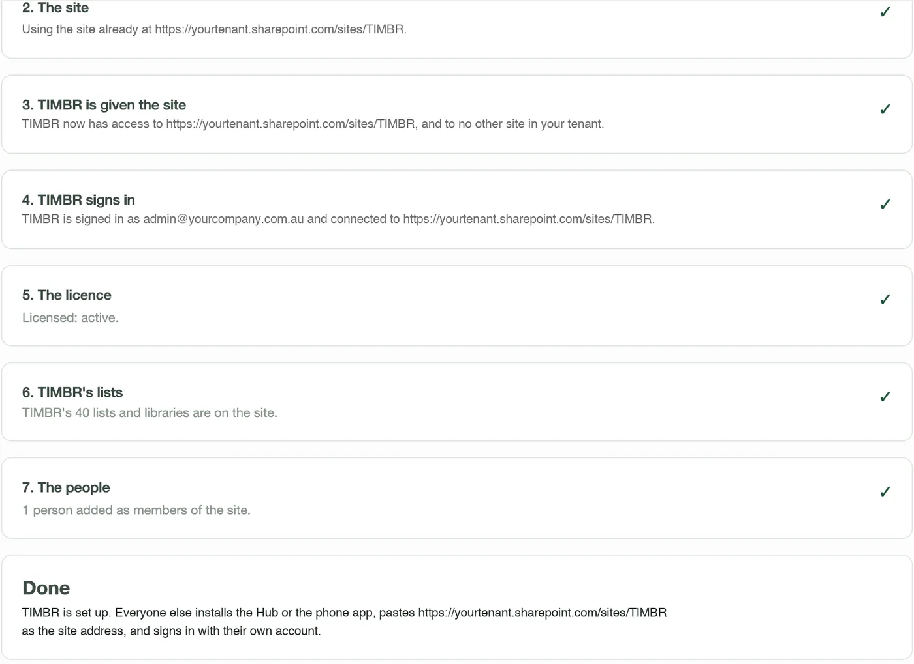
3. Everyone signs in. The page ends by saying what to tell them: install the Hub or the phone app, paste the site address, sign in with their own account. The QGIS plugin installs from the Hub's Settings page.
Removing TIMBR Setup afterwards. Once the page says Done, nothing uses TIMBR Setup again. To take it out of your tenant: entra.microsoft.com › Identity › Applications › Enterprise applications › TIMBR Setup › Properties › Delete. TIMBR keeps working; it never depended on it.
The long way: by hand
Everything the set-up page does, as steps an administrator can take in the SharePoint admin centre, Entra and PowerShell, for an organisation that would rather not consent to a set-up helper at all. The result is identical.
Before you start
Who does this: someone who is a Global Administrator in Microsoft 365 (for step 3) and a SharePoint Administrator (for steps 1 and 4). In most small companies that is one person, often whoever set up Microsoft 365, or the IT provider.
What you need to hand: your tenant name (the part before .sharepoint.com when you open SharePoint), the names of the people who will use TIMBR, and which one of them will connect first. Everyone who uses TIMBR needs a Microsoft 365 licence that includes SharePoint, which every Business and Enterprise plan does.
What you end up with: one private SharePoint site that holds everything TIMBR records, TIMBR allowed into that site and nothing else, your people as members of it, and a trial licence for the organisation. The steps are in the order they have to happen.
Step 1. Create a dedicated SharePoint site
TIMBR lives in one SharePoint site of its own. Everything it records, trees, projects, jobs, photos, the crew board, is a list or a library on that site, in your tenant, owned by you.
- Go to admin.microsoft.com and sign in as an administrator. In the left menu choose Show all › SharePoint. That opens the SharePoint admin centre.
- In its left menu choose Sites › Active sites, then press + Create at the top.
- Choose Team site. If it asks for a template, choose the Standard team template.
- Fill in the form:
- Site name:
TIMBR. The site address fills itself in as/sites/TIMBR; leave it. - Group owner: the person who will connect first and create TIMBR's lists (step 6).
- Privacy settings: Private. Only people you add can see it.
- Language and time zone: yours. The language cannot be changed afterwards.
- Site name:
- Press Next. It offers to add members now; you can do that here or in step 2. Press Finish.
- Open the new site once and copy its address from the browser. It looks like
https://yourtenant.sharepoint.com/sites/TIMBR. Keep it: every person pastes this same address into the Hub and the phone app.
The same steps in pictures. The site in them is called TimbrHub; the name is yours to choose, as long as everyone uses the address it produces.
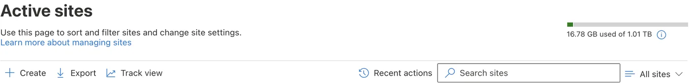
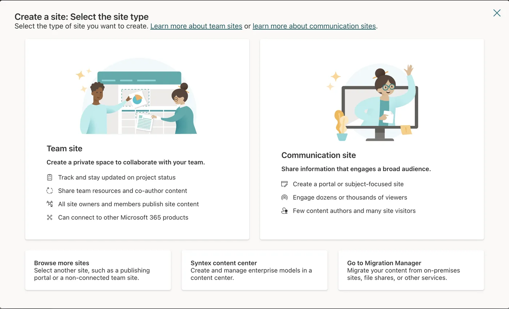
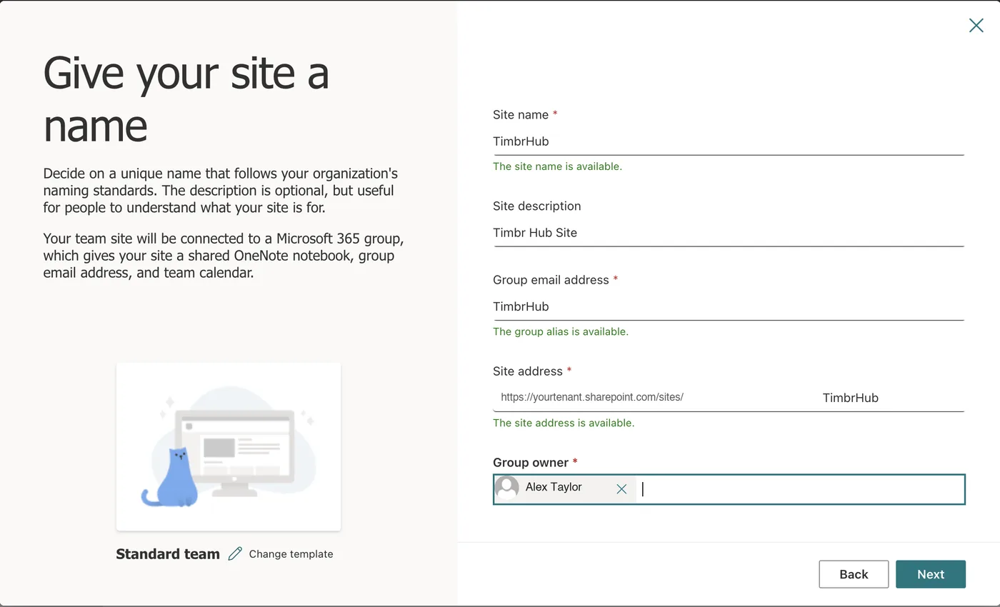
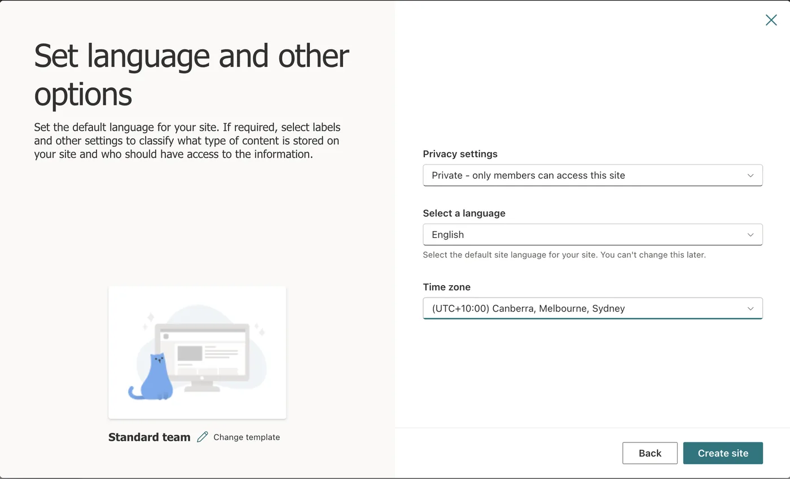
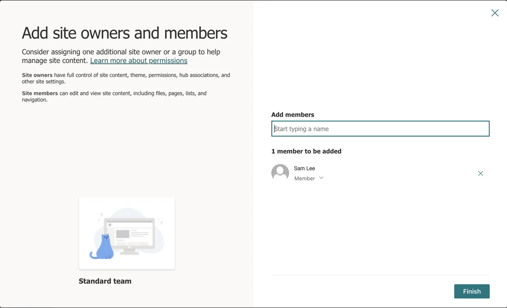
Not the tenant's main site, and not an existing team site. The main site is https://yourtenant.sharepoint.com with nothing after it; an existing site already holds other things. A site of TIMBR's own is what lets step 4 confine TIMBR to it, and keeps its lists and photos apart from everything else you keep in SharePoint.
Photos taken on site are stored here too. A tree survey of a few hundred trees with photos is a few gigabytes; a new site's default storage is plenty, and it draws on the tenant's pooled storage rather than a fixed quota.
Step 2. Give your people access to that site
TIMBR can only reach what the signed-in person can reach, so membership of this site is how you decide who can use TIMBR. There is no separate user list to keep.
- Open the TIMBR site in the browser. Press the Settings cog at the top right › Site permissions (on some tenants Site information › View all site settings › Site permissions).
- Press Add members › Add members to group. Type each person's name and add them. Everyone who will use TIMBR, in the office or in the field, goes in as a Member.
- Make the person who will connect first an Owner: next to their name, change Member to Owner. Creating TIMBR's lists on the site (step 6) needs owner rights; using TIMBR afterwards does not.
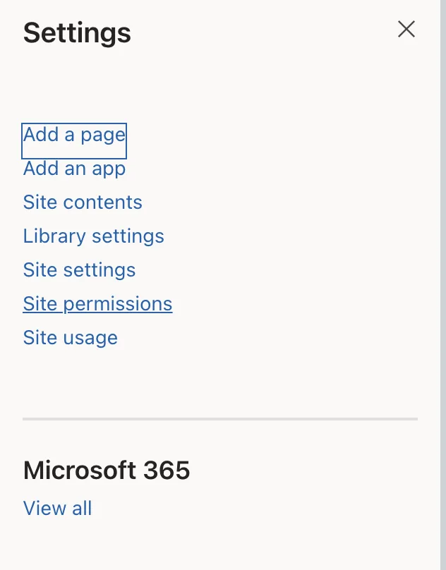
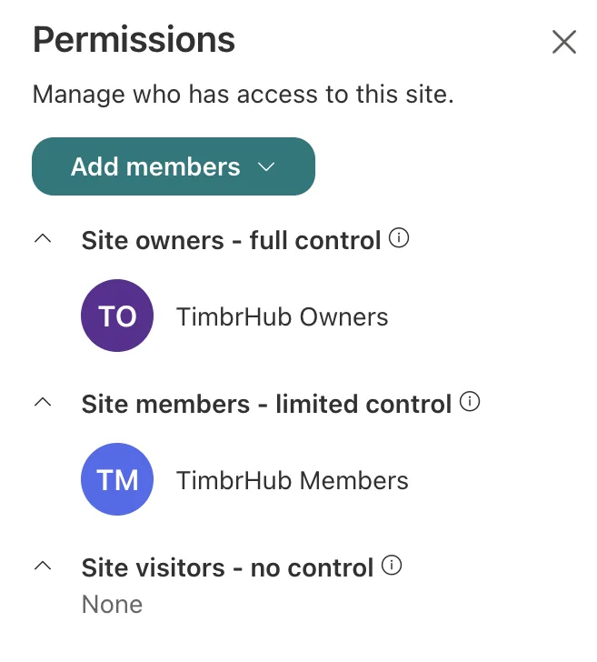
A new starter later is just a new member of the site; someone who leaves is removed from it, and their access to TIMBR ends with it. If you prefer, make a Microsoft 365 group or security group the member instead and manage people there.
Step 3. Consent to the TIMBR app
TIMBR signs people in through Microsoft's own sign-in page, as a registered application. The first time, Microsoft asks an administrator to agree to what the app may do for the organisation. The prompt is headed Permissions requested, names TIMBR, and lists three things:
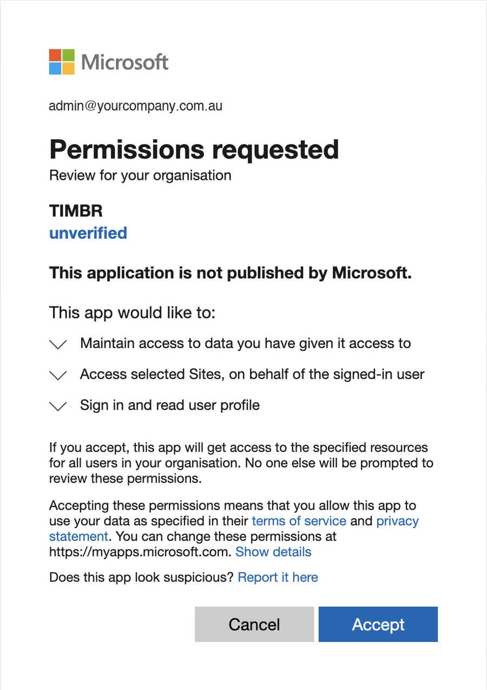
| Sign in and read user profile | User.Read. Lets TIMBR know who is signed in and show their name. |
| Access selected Sites, on behalf of the signed-in user | Sites.Selected. Lets TIMBR reach only the SharePoint sites an administrator has explicitly granted it, which after step 4 is the one TIMBR site. |
| Maintain access to data you have given it access to | offline_access. Microsoft's standard permission for staying signed in on a phone without typing a password every hour. It grants nothing new; it only lets the two above keep working between sign-ins. |
There are two ways to give that consent. Either is fine; do one.
At the first sign-in. A Global Administrator installs the Hub (Download), opens Deployment, pastes the site address from step 1 and presses Connect Microsoft 365. Microsoft's page opens and shows Permissions requested, with the two items above. Tick Consent on behalf of your organisation, then press Accept. Done; the administrator carries straight on to step 5.
From a link. Signed in as a Global Administrator, open this; Microsoft shows the same prompt and Accept consents for the organisation:
https://login.microsoftonline.com/common/adminconsent?client_id=63686792-1aa5-4dc4-9d27-2b2a215a7376 |
The page it lands on afterwards may say the address could not be reached; the consent has still been recorded. Alternatively, in the Entra admin centre: entra.microsoft.com › Identity › Applications › Enterprise applications, find the app (it appears once anyone in your tenant has tried to sign in to it), open it, choose Permissions and press Grant admin consent for your organisation.
Whichever way, the prompt must list exactly the three items above. If it lists anything else, such as Read directory data, stop and tell us before accepting.
The word unverified under the name means TIMBR has no Microsoft Partner Center badge, which is a partner-programme enrolment rather than a security check. The publisher is SG Arboricultural Consulting; the app registration ID below is how you confirm it.
If a person who is not an administrator signs in first, Microsoft shows Need admin approval instead. Nothing is wrong: they can type a note and press Request approval, or an administrator does one of the two things above and the person signs in again.
App registration, for your records: 63686792-1aa5-4dc4-9d27-2b2a215a7376, published by SG Arboricultural Consulting. There are no application permissions, no client secrets and no certificates: TIMBR can do nothing while nobody is signed in, and every action appears in your sign-in logs as a named person.
Step 4. Grant the app that one site
Sites.Selected means TIMBR can reach no site at all until an administrator names one. This step names the TIMBR site, and only it. It is done once, with PnP PowerShell, Microsoft's community-maintained PowerShell module for SharePoint. Allow ten minutes the first time.
Install PnP PowerShell if the computer does not have it. Open PowerShell (on Windows, PowerShell 7 from the Start menu; on a Mac, install PowerShell from Microsoft, then run pwsh in Terminal) and run:
Install-Module PnP.PowerShell -Scope CurrentUser |
Register PnP once in your tenant. PnP PowerShell signs in through an app registration of its own, which a tenant has to have before it can connect. Skip this if your tenant already uses PnP. Run it as a Global Administrator; a browser window opens to consent:
Register-PnPEntraIDApp -ApplicationName "PnP Management Shell" -Tenant yourtenant.onmicrosoft.com -Interactive |
It prints an application id (a client id). Keep it; the next command uses it.
Connect to the TIMBR site as a SharePoint Administrator, then grant TIMBR the site:
Connect-PnPOnline -Url "https://yourtenant.sharepoint.com/sites/TIMBR" -Interactive -ClientId "<the id Register-PnPEntraIDApp printed>" |
Grant-PnPAzureADAppSitePermission -AppId "63686792-1aa5-4dc4-9d27-2b2a215a7376" -DisplayName "TIMBR" -Site "https://yourtenant.sharepoint.com/sites/TIMBR" -Permissions Manage |
Replace yourtenant with your tenant name in both places. If your tenant already had PnP set up before 2024, Connect-PnPOnline works without -ClientId.
Check it. Still connected to the TIMBR site:
Get-PnPAzureADAppSitePermission |
It lists TIMBR with Manage. Connect to any other site and run it again: TIMBR is not listed. That is the whole of what TIMBR can reach.
Why Manage. TIMBR creates its own lists and libraries on the site the first time it connects (step 6), and Write does not allow creating lists. Manage is still confined to this one site; it gives TIMBR nothing anywhere else.
To take it away later: Revoke-PnPAzureADAppSitePermission on the site, or delete TIMBR under Enterprise applications in Entra. Access stops at once and the data stays in your SharePoint.
Step 5. Start the free trial
Open TIMBR Hub and sign in with your Microsoft 365 account (Deployment › paste the site address › Connect Microsoft 365). Because the organisation has no licence yet, the Hub says so and points you to its Account page, under System in the left menu.
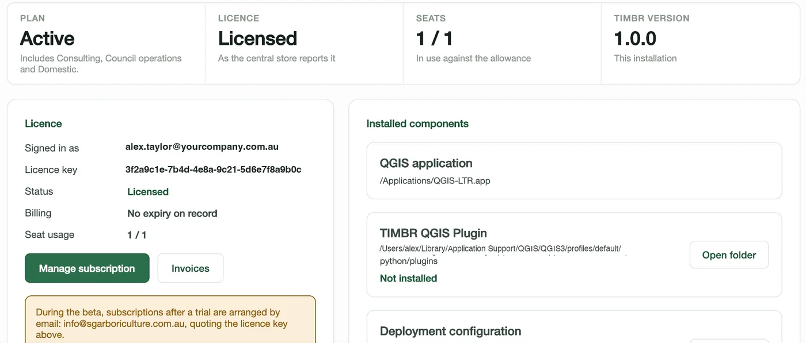
In the Start a free trial box, type your company's name and press Start a free trial. The trial begins at once, covers everyone in the organisation, and the Status line shows the day it ends. Then go back to Deployment and press Connect Microsoft 365 again to carry on.
The only things sent are your organisation's tenant ID and the company name you typed. One trial per organisation; when it ends, or to go straight to a subscription, email hello@timbrfield.com.au quoting the licence key the Account page shows.
Step 6. Connect and create the lists
Done once, by the site owner from step 2, in TIMBR Hub.
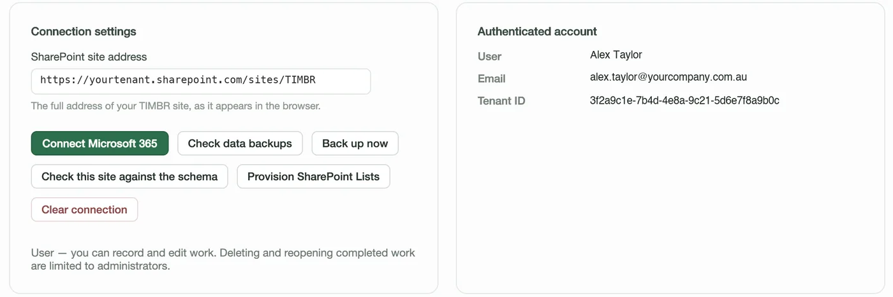
- Deployment › paste the full site address into SharePoint site address › Connect Microsoft 365 › sign in. The right-hand card shows who is signed in; the status line says the site was found.
- Press Provision SharePoint Lists. The Hub creates TIMBR's lists and libraries on the site: a minute or two, with progress shown as it goes. When it finishes, the Home page's Getting set up card ticks TIMBR's lists on the site.
- Add your people under Organisation › Consultants, so they can be put on projects and jobs. That is the last tick on the Home card, and it disappears.
Provisioning is safe to run again at any time, including after a TIMBR update that adds a list or a column: it only ever adds what is missing and never changes or removes data. Check this site against the schema reports what is missing without changing anything.
Step 7. Each person installs and signs in
Hub (Mac or Windows): install, open Deployment, paste the same full site address, press Connect Microsoft 365 and sign in with their own account. The Hub keeps no sign-in between sessions, so Connect is pressed each time it opens. New versions are offered inside the Hub.
Field (iPhone, iPad, Android): on iPhone and iPad install through TestFlight; on Android from the beta invitation. On the sign-in screen enter the same site address under Your TIMBR site, then sign in.
QGIS plugin (the consultants who draw plans): install QGIS 3.44 LTR, then in TIMBR Hub › Settings › Install the plugin into QGIS, restart QGIS, and press Sign in on the TIMBR toolbar. The Download page has the zip route for a computer without the Hub.
Nothing else is set up per person. What they can see and do follows from the site membership in step 2.
If something doesn't work
| What you see | What it means and what to do |
|---|---|
| Site not found | The address isn't the TIMBR site's full address, or step 4 hasn't been done for it. Open the site in a browser and copy the address from there; make sure it ends in /sites/TIMBR (or whatever you named it), not just .sharepoint.com. Then check step 4's Get-PnPAzureADAppSitePermission on that site lists TIMBR. |
| Access denied, or 403 | Either the person isn't a member of the site (step 2) or the grant in step 4 is missing or on the wrong site. TIMBR can only reach what both the person and the grant allow. |
| Need admin approval | Step 3 hasn't been done. An administrator consents by either route there; the person then signs in again. |
| Provision fails part-way | The person connecting isn't an owner of the site (step 2), or the grant is Write rather than Manage (step 4). Fix that and press Provision again; it carries on from what exists. |
| No licence, or the trial button is missing | The trial button only shows while the licensing service answers that the organisation has none. If the Hub says it couldn't reach the service, check the internet connection and try again. If the organisation already had a trial, email hello@timbrfield.com.au with the licence key. |
| Set-up page: "SharePoint would not create the site" | Your tenant doesn't let this account create sites. A SharePoint Administrator can, or can switch site creation on for users (SharePoint admin centre › Settings › Site creation). Or make the site by hand (step 1 below) and paste its address into the page. |
| Set-up page: TIMBR signs in but can't reach the site yet | Microsoft can take a minute to apply a new grant. Press Sign in to TIMBR again shortly. |
| Sign-in blocked by your organisation | Your Conditional Access policy is applying, as it should. TIMBR signs in through Microsoft's page and honours MFA, device and location rules; allow it the same way as any other app. |
| Asked to sign in every time | By design. The Hub keeps no token on disk. |
Checking it afterwards
Three checks, any time: Get-PnPAzureADAppSitePermission against any other site shows no TIMBR; the Entra sign-in logs show TIMBR sign-ins as named people; and the TIMBR site's permissions page lists exactly the people you expect.
Questions IT usually asks
Can it read our other SharePoint sites, OneDrive, mail or directory?
No. It asks for Sites.Selected, User.Read and the standard offline_access only, and Sites.Selected reaches only sites explicitly granted. TIMBR connects only to the site address it is given; it never searches for sites or falls back to any other site.
What is TIMBR Setup, and why does it ask for so much?
Making a SharePoint site and granting an app access to one site both need a permission that spans all sites; there is no narrower one. Putting that on TIMBR would undo the point of Sites.Selected, so it sits on a separate registration that only the set-up page uses, acting as the administrator who signed in, for as long as they are signed in. Nothing is stored. You can delete it from Enterprise applications afterwards, and TIMBR carries on. If you would rather not consent to it at all, the long way below needs no helper.
Can it do anything when nobody is signed in?
No. No application permissions, no credentials. Every action appears in your sign-in logs as a named person.
How do we revoke it?
Entra › Enterprise applications › TIMBR › Delete, or Revoke-PnPAzureADAppSitePermission. Access stops at once; the data stays in your SharePoint.
Conditional Access and MFA?
Supported and recommended. TIMBR signs in through Microsoft's own page and honours your policies.
Does it need a service account?
No.
What leaves our tenant?
The tenant ID, to check the licence, and the company name you type when you start the trial. Optional features you switch on yourself may send more: online quote acceptance sends a quote's number, total and line descriptions to a page the client opens; drive-time routing sends map coordinates. Each is off until you turn it on, and Your data sets out all of it.
Ready when the site is
Download the Hub, connect it to the site, and the lists build themselves.
Or call 0400 777 395.